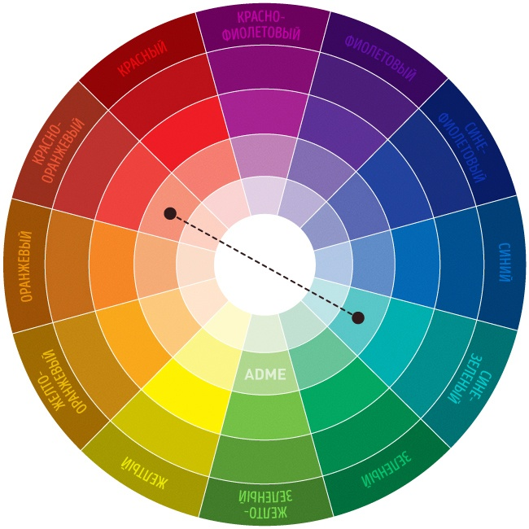

Комплементарными, или дополнительными, контрастными, являются цвета, которые расположены на противоположных сторонах цветового круга Иттена. Выглядит их сочетание очень живо и энергично, особенно при максимальной насыщенности цвета.
Подробнее - на adme.ru.